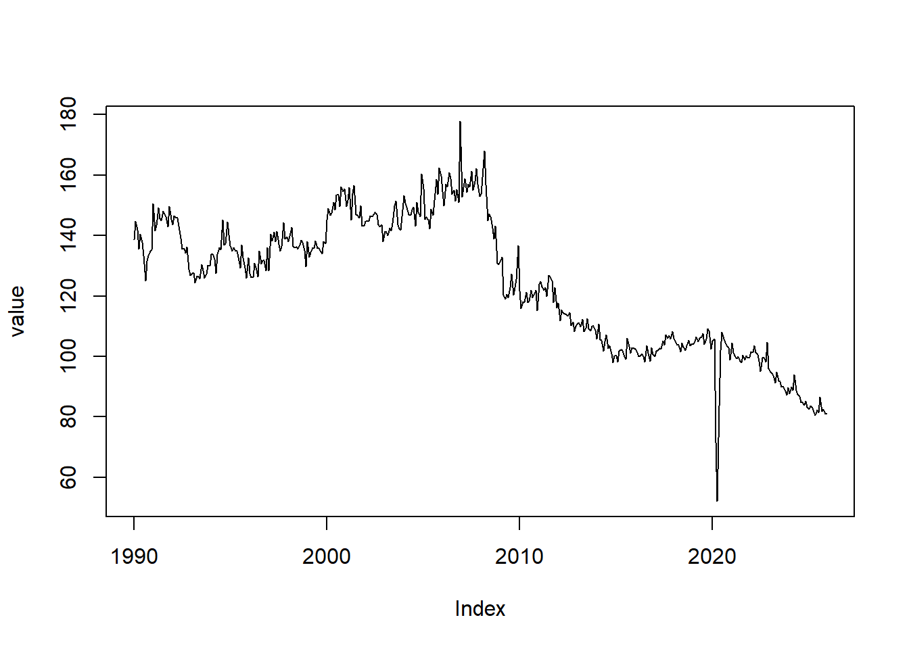
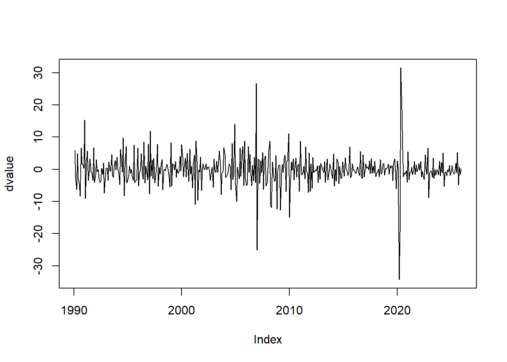
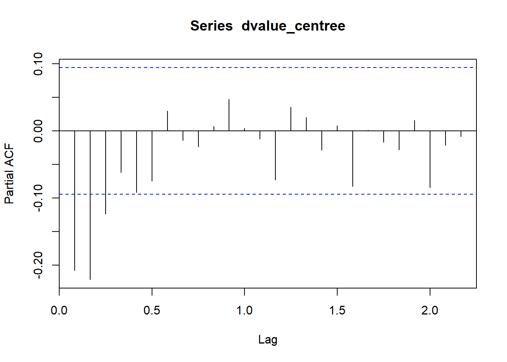
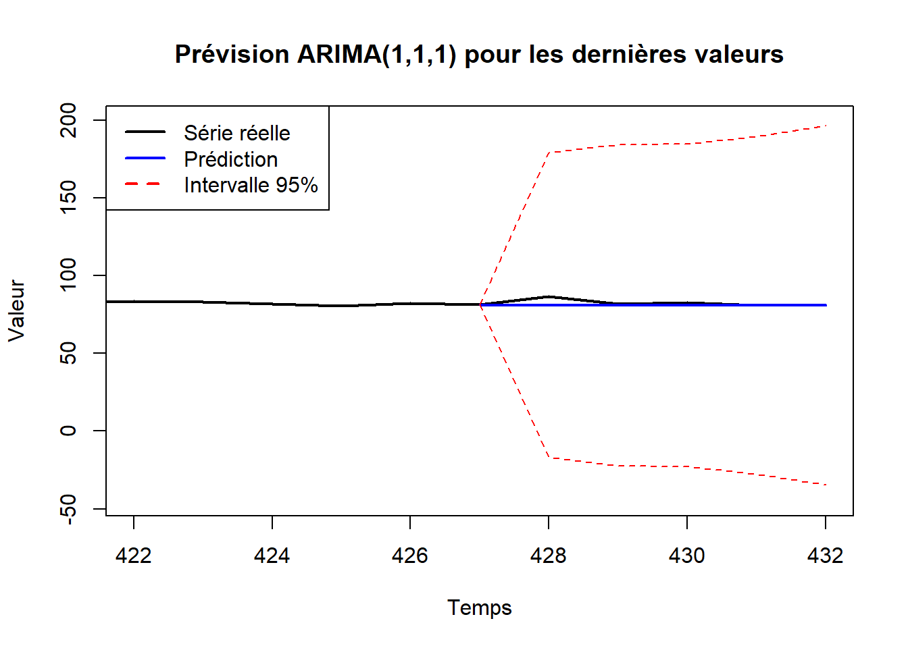
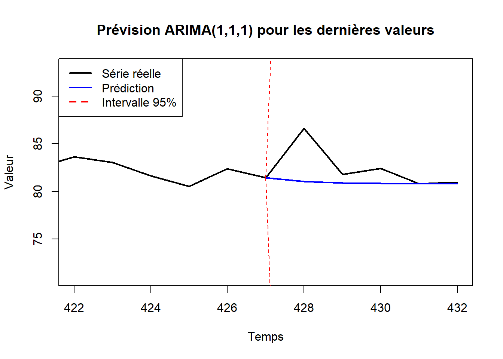

# Script avec commentaires pour le projet de séries temporelles Paul / Mihnea
# Première version: 01 Mai 2025
#==============================================================================#
# Packages ---------------------------------------------------------------------
#==============================================================================#
library(zoo)
library(tseries)
library(fUnitRoots)
library(purrr)
library(lmtest)
#==============================================================================#
# Partie 1 Les données ---------------------------------------------------------
#==============================================================================#
#Importation et nettoyage de la base
data <- read.csv("valeurs_mensuelles.csv", sep = ",")
data <- data[-c(1:3), ] #Enlever les premières lignes qui donnent l'ID de la base et la date de mise à jour
data <- data[,-c(3) ] #Enlever la dernière colonne avec les codes de chaque observation
colnames(data) <- c("dates","value")
dates_char <- as.character(data$dates)
data$value <- as.numeric(data$value)
dates_char[[1]]; dates_char[length(dates_char)][1] "1990-01"[1] "2025-12"dates <- as.yearmon(seq(from=1990, to=2025+11/12, by=1/12))
value <- zoo(data$value, order.by=dates)
#Visualisation de la série temporelle et de son ACF
plot(value)
acf(value)
#La série ne présente pas de saisonnalité au vu de son évolution et de son ACF.
#Cependant, graphiquement nous remarquons qu'elle n'est pas stationnaire.
#Différenciation de la série et visualisation de dvalue
dvalue <- diff(value,1)
plot(dvalue)
acf(dvalue)
# La série différenciée semble stationnaire et ne présente pas de saisonnalité
# Pas de signe visible à l'oeil de tendance, donc a priori, la série n'est pas
# intégrée, i.e. n'a pas une racine unitaire.
# On va toutefois tester ça plus précisément avec un test de racine unitaire
#Modèle de regression linéaire pour savoir quel test de racine unitaire faire
dvalue <- zoo(dvalue, order.by=dates)
summary(lm(dvalue ~ dates))
Call:
lm(formula = dvalue ~ dates)
Residuals:
Min 1Q Median 3Q Max
-34.063 -2.131 -0.124 2.090 31.798
Coefficients:
Estimate Std. Error t value Pr(>|t|)
(Intercept) 17.592350 46.996939 0.374 0.708
dates -0.008821 0.023405 -0.377 0.706
Residual standard error: 5.055 on 430 degrees of freedom
Multiple R-squared: 0.0003302, Adjusted R-squared: -0.001995
F-statistic: 0.142 on 1 and 430 DF, p-value: 0.7064 #Au vu de la régression linéaire, nous sommes dans le cas pas centré et pas de tendance visible
#On va alors effectuer un test de Perron-Phillips pour vérifier la présence ou non de racine unitaire
pptest_case_stationary <- pp.test(dvalue, alternative = "stationary")
pptest_case_stationary$p.value[1] 0.01 #On obtient une p-value de 0.01 donc au seuil 98.9% on rejette H0 donc on accepte H1
#Dans le test de PP l'hypothèse H1 est "il n'y a pas de racine unitaire".
#On en conclu que la série différenciée dvalue est stationnaire. Pour en être sûr on peut faire un test de kpss
kpss.test(dvalue, null = "Level")$p.value[1] 0.1 #La p-value obtenue est 0.1 donc au seuil 99% (même 95%) on ne rejette pas H0 donc dvalue est bien stationnaire
#Représentation graphique de la série avant et après transformation
#windows()
#par(mfrow = c(2, 1))
plot(value)
plot(dvalue)
#==============================================================================#
# Partie 2 Modèles ARMA --------------------------------------------------------
#==============================================================================#
#On commence par centrer la variable dvalue
dvalue_centree <- dvalue - mean(dvalue)
#On regarde l'ACF de cette nouvelle variable pour déterminer l'ordre maximal du côté MA
acf(dvalue_centree)
q_test=2
#L'odre maximal du côté MA est alors q_test = 2
#On regarde le PACF de cette nouvelle variable pour déterminer l'ordre maximal du côté AR
pacf(dvalue_centree)
p_test=3
#L'odre maximal du côté AR est alors p_test = 3
#Création de la fonction de test Box-Ljung pour vérifier que les résidus ne sont pas corrélés
Qtests <- function(series, nb_lags_max_Portmanteau_test = 24, fitdf = 0) {
pvals <- apply(X = matrix(1:nb_lags_max_Portmanteau_test), MARGIN = 1,
FUN = function(l) {
if (l <= fitdf) {
pval <- NA
} else {
pval <- Box.test(series, lag = l, type = "Ljung-Box", fitdf = fitdf)$p.value
}
return(c("lag" = l, "pval" = pval))
})
return(t(pvals))
}
#On crée tous les modèles possibles pour p<=p_test et q<=q_test
pqs <- expand.grid(0:p_test,0:q_test)
mat <- matrix(NA, nrow=p_test +1, ncol=q_test +1)
rownames(mat) <- paste0("p=",0:p_test) #renomme les lignes
colnames(mat) <- paste0("q=",0:q_test) #renomme les colonnes
AICs <- mat #matrice ou assigner les AIC
BICs <- mat #matrice ou assigner les BIC
for (row in 1:dim(pqs)[1]){
p <- pqs[row,1]
q <- pqs[row,2]
if ((p==0)&&(q==2)) {print(c(p,q))}
estim <- arima(dvalue_centree,c(p,0,q), include.mean=F) #tente d'estimer l'ARIMA
q_tests = Qtests(estim$residuals, nb_lags_max_Portmanteau_test = 30,
fitdf = length(estim$coef))
if ((p==0)&&(q==2)) {print(q_tests)}
if ((p==0)&&(q==2)) {print(coeftest(estim))}
AICs[p+1,q+1] <- if (class(estim)=="try-error") NA else estim$aic
BICs[p+1,q+1] <- if (class(estim)=="try-error") NA else BIC(estim)
}[1] 0 2
lag pval
[1,] 1 NA
[2,] 2 NA
[3,] 3 0.5524487
[4,] 4 0.8336335
[5,] 5 0.7997667
[6,] 6 0.8927779
[7,] 7 0.7102150
[8,] 8 0.8155912
[9,] 9 0.8853309
[10,] 10 0.9255650
[11,] 11 0.9285630
[12,] 12 0.9342528
[13,] 13 0.9439155
[14,] 14 0.9210362
[15,] 15 0.9066371
[16,] 16 0.9380520
[17,] 17 0.9202788
[18,] 18 0.9461022
[19,] 19 0.8702773
[20,] 20 0.9037391
[21,] 21 0.9272577
[22,] 22 0.9447795
[23,] 23 0.9615493
[24,] 24 0.9036737
[25,] 25 0.9262018
[26,] 26 0.9431918
[27,] 27 0.9473225
[28,] 28 0.9574999
[29,] 29 0.9694680
[30,] 30 0.9739654
z test of coefficients:
Estimate Std. Error z value Pr(>|z|)
ma1 -0.307170 0.046560 -6.5973 4.187e-11 ***
ma2 -0.205355 0.046174 -4.4474 8.692e-06 ***
---
Signif. codes: 0 '***' 0.001 '**' 0.01 '*' 0.05 '.' 0.1 ' ' 1 #On détermine la validité des modèles
#Avec les tests du porte-manteau, on en déduit que les modèles où les résidus sont bien décoréllés au seuil 99% sont:
# ARMA( 3 , 0 ) ; ARMA( 1 , 1 ) ; ARMA( 2 , 1 ) ; ARMA( 3 , 1 ) ; ARMA( 0 , 2 ) ; ARMA( 1 , 2 ) ; ARMA( 2 , 2 ) ; ARMA( 3 , 2 ) ;
#AVec les tests de Student, on en déduit que les modèles où les coefficients de plus grand ordre sont significatifs sont:
# ARMA( 1 , 0 ) ; ARMA( 2 , 0 ) ; ARMA( 0 , 1 ) ; ARMA( 1 , 1 ) ; ARMA( 0 , 2 )
#Ainsi, les modèles possibles pour dvalue_centrée (ceux qui passent les deux tests de validités) sont:
# ARMA( 1 , 1 ) ; ARMA( 0 , 2 )
#On détermine les meilleurs modèles avec AIC , BIC
AICs q=0 q=1 q=2
p=0 2626.188 2594.061 2577.748
p=1 2609.066 2579.489 2579.379
p=2 2589.315 2579.415 2581.357
p=3 2584.691 2581.342 2582.358 #Au sens de AIC, le meilleur modèle est ARMA(0 , 2 )
BICs q=0 q=1 q=2
p=0 2630.256 2602.198 2589.953
p=1 2617.203 2591.694 2595.653
p=2 2601.520 2595.689 2601.699
p=3 2600.965 2601.684 2606.769 #Au sens de BIC, le meilleur modèle est ARMA( 0 , 2)
arima002 <- arima(dvalue_centree, order = c(0, 0, 2), include.mean = FALSE)
arima101 <- arima(dvalue_centree, order = c(1, 0, 1), include.mean = FALSE)
#On détermine le meilleur modèle parmi les deux précédants avec le critère du R^2 ajusté
Adj_R2 <- function(model){
p <- model$arma[[1]] # ordre AR
q <- model$arma[[2]] # ordre MA
ss_res <- sum(model$residuals[-1]^2) # Modele ARMA sur dspread, perd première date
ss_tot <- sum(dvalue_centree^2)
n <- length(dvalue_centree)
adj_r2 <- 1 - (ss_res / (n - (p + q + 1))) / (ss_tot / (n - 1))
return(adj_r2)
}
Adj_R2(arima101)[1] 0.110115Adj_R2(arima002)[1] 0.1136935 #Au sens du critère du R^2, le meilleur modèle est ARMA( 0 , 2 )
#### Par conséquent, le meilleur modèle pour value est ARIMA(0,1,2)
value <- value
model <- arima(value,c(0,1,2), include.mean=F)
#==============================================================================#
# Partie 3 Prédiction ----------------------------------------------------------
#==============================================================================#
#Avec le modèle ARIMA(0,1,2), la prédiction devenait constante à partir de l'horizon 2
#Ainsi, on a chois de prendre l'autre modèle valide à savoir le modèle ARIMA(1,1,1)
#Avoir le theta, le phi et le sigma avec le modèle ARIMA(1,1,1)
sigma2 <- arima101$sigma2
phi <- coef(arima101)["ar1"]
theta <- coef(arima101)["ma1"]
#Fixer les paramètres de la prédiction
n_value <- length(value)
horizon <- 5
start_pred <- n_value - horizon
value_vraie <- as.numeric(value)
#Effectuer la prédiction
fit <- arima(value_vraie[1:(n_value - horizon)], order = c(1, 1, 1))
prediction <- function(phi, theta, value_vraie, start_pred, horizon) {
val1 <- value_vraie[start_pred] #t_X_t
val2 <- val1 + phi * (val1 - value_vraie[start_pred - 1])
var_vec <- numeric(horizon + 1)
#t_X_t+1
var_vec[1] <- val1
var_vec[2] <- val2
# Calculer les valeurs pour h = 2 à horizon
for (h in 2:horizon) {
var_vec[h+1] <- (1 / (1 - phi)) * (val2 - phi * val1 + (val1 - val2) * phi^h) #t_X_t+h
}
# Retourner le vecteur complet
return(var_vec)
}
#Calculer la variance des écarts
variance <- function(phi, theta, sigma2, horizon) {
# Initialise vecteur résultats
var_vec <- numeric(horizon + 1)
var_vec[1] <- 0 # pour h=0
for (h in 1:horizon) {
sum_k <- 0
for (k in 0:(h-1)) {
val_k <- (1 - phi^(k+1) + theta + theta * phi^k) / (1 - phi)
sum_k <- sum_k + val_k^2
}
var_vec[h+1] <- sigma2 * sum_k
}
return(var_vec)
}
#Créer la base avec toutes les infos de la prédition
pred <- data.frame(
pred = prediction(phi, theta, value_vraie, start_pred, horizon),
se = variance(phi, theta, sigma2, horizon))
# Créer la série prédite et la série des bornes de l'intervalle de confiance
predicted_values <- ts(pred$pred, start = start_pred)
lower_95 <- ts(pred$pred - 1.96 * pred$se, start = start_pred)
upper_95 <- ts(pred$pred + 1.96 * pred$se, start = start_pred)
# Tracer la série originale et les prédictions
plot(value_vraie, type="l", xlim = c(n_value - 2 * horizon, n_value), ylim = range(c(value_vraie[(n_value - 2*horizon):n_value], lower_95, upper_95)+c(-10,10), na.rm = TRUE), #Enlever le lower_95 et le upper_95 pour une meilleur fenêtre
col = "black", lwd = 2, main = "Prévision ARIMA(1,1,1) pour les dernières valeurs",
ylab = "Valeur", xlab = "Temps")
# Ajouter les prédictions et les intervalles
lines(predicted_values, col = "blue", lwd = 2)
lines(lower_95, col = "red", lty = 2)
lines(upper_95, col = "red", lty = 2)
legend("topleft", legend = c("Série réelle", "Prédiction", "Intervalle 95%"),
col = c("black", "blue", "red"), lty = c(1,1,2), lwd = 2)
# Tracer la série originale et les prédictions
plot(value_vraie, type="l", xlim = c(n_value - 2 * horizon, n_value), ylim = range(c(value_vraie[(n_value - 2*horizon):n_value])+c(-10,10), na.rm = TRUE), #Enlever le lower_95 et le upper_95 pour une meilleur fenêtre
col = "black", lwd = 2, main = "Prévision ARIMA(1,1,1) pour les dernières valeurs",
ylab = "Valeur", xlab = "Temps")
# Ajouter les prédictions et les intervalles
lines(predicted_values, col = "blue", lwd = 2)
lines(lower_95, col = "red", lty = 2)
lines(upper_95, col = "red", lty = 2)
legend("topleft", legend = c("Série réelle", "Prédiction", "Intervalle 95%"),
col = c("black", "blue", "red"), lty = c(1,1,2), lwd = 2)